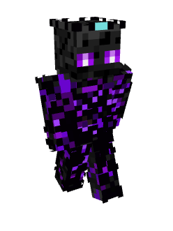
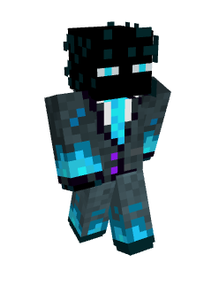
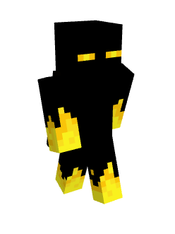
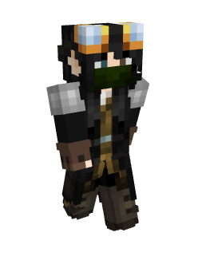
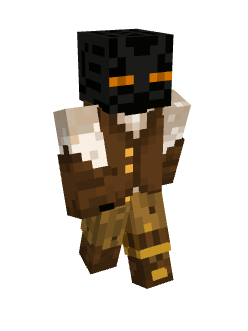
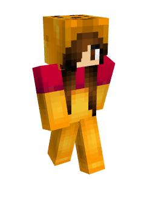
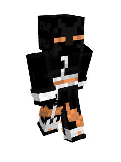

OUR HISTORY
Four friends met each other whilst playing on a server in January 2021 and formed on that server the first ever Enderman Society. After playing on various servers together, three of the four decided to make their own server, and so The Enderman Society was born. With a passion for all things Enderman and an eternal love for the googly eyes.
OUR STAFF
We have a dedicated network of staff who have been personally trained by the owners and therefore it is ensured that staff see eye to eye with the owners. Staff will always help out when a player is in need and all share the same goal: making a safe player environment and make sure everyone is having a great time!
OUR SERVER
We have a Semi Vanilla SMP server, which is inspired by a popular series on YouTube. We are seasons based, therefore after each season there is a map reset where we all start fresh with new ideas.
OUR DISTRICTS
Building Districts
We have several building districts in diffrent styles! Find the district that suits you and start building!
These are our districts:
- Free Build
- Lost Civilization
- Frozen Kingdom
- Medieval
- Aquatic
- Sci-Fi
- Floating Island
- Tree House
- Oriental
- Shopping District
- Gaming District
- Sand mining Desert Biome -> so you can destroy the biome and take every last block of sand!

Shopping District
We have our very own shopping district where the currency is DIAMONDS. Here you can spend all your diamonds to your hearts content and get all the items you need to complete your builds! We have certain rules about how our shopping district functions, so keep an eye for those. Also, to prevent the economy to crash, we have established a minimum price for certain items in game.
Gaming District
Gaming District: are you in the mood to play a little game? We got you covered, with our own gaming district! Players can make their minigames at the gaming district and have a good time!
OUR STAFF
Jinina
Owner

Insurexion
Owner

SuperrJoshh
Owner

Oliver
Senior Admin
Antip
Admin
PapaRicky
Admin
LCCD
Senior Moderator
KeshaTheAffen
Senior Moderator

RedstoneReedYT
Moderator

Duplica
Moderator

ShadowBound8
Moderator

RULES & FAQ
RULES
RULE 1: Don't purposefully be an Asshole, you are here to have fun!A. Do not spam in MC chat (or any other chat) repeatedly the same word, insult or curse word.
B. Discrimination will be met with punishment no matter what it is over, this includes: Racism, sexism, homophobic slurs and anything else the staff might see as discrimination
C. Keep depressing issues, suicide jokes to a minimum, these rules do not apply in ðŸ¤â”Šmemes-nsfw, 😡┊i-just-need-to-vent
D. NSFW is not allowed in general chats, however exceptions can be made for ðŸ¤â”Šmemes-nsfw or depending on each individual case
E. Advertising of other servers is not allowed.
D. PVP is toggelable on this server. Use /pvp to turn pvp on or off. It is the responsibility of the player to make sure they have it on or off. If you leave pvp on and someone kills you, it's not the up to staff to return your stuff back. However, don't be a dick about it.
RULE 2: Griefing is not allowed
A. DO NOT alter or change builds that do not belong to you, if you haven't built on it, then do not touch it, however if you have permission from the owner you may.
B. Theft: DO NOT take items from chests, barrels, furnaces, shulkers... etc without the explicit permission from the owner. If you do steal things, you will be punished accordingly.
C. DO NOT steal from dead people's death spots, unless asked by the player or if you actually going to save them
D. Offensive builds: Do not build any offensive builds. This includes, but is not limited to, swastikas, penises, any religious builds. A member of staff can at any time deem a build offensive and must be removed immediately.
E. It is not allowed to spawn the wither on the main End island, Shopping District or Gaming district for any reason.
F. If you have any questions, DM @Andyman to send a message to obtain support by the staff team. DMing staff team is not allowed. Pinging owners is never allowed, pinging staff only in emergency situations that require immediate attention.
G. Build your bases 200 blocks away from another player.
H. It is not allowed to ping a role, here or everyone in any of the channels.
I. Trespassing in other people's bases is not allowed. If you want to visit someone's base, ask them first. If you do decide to go into someone's base without proof of their permission, you will be punished accordingly. There's technical players with sensitive farms around their bases, so please be respectful.
RULE 3: Cheating in any way
A. X-raying resource packs or simply X-raying of any kind is not allowed. Exception is made with the composter glitch to light up your caves underneath your base. This is to help with overall mob spawning.
B. Do not use any unapproved exploits or mods (see below for a list of approved exploits and mods)
C. Do not use Anti-Afk machines to make you get member rank without actually playing. This includes being caught autoclicking on a button, lever... etc.
D. Duping is not allowed, of any kind. If you are caught using a duper, you will be asked to remove the farm and all items related to the duped item will be removed, you may also be punished accordingly. Only TNT dupers, are allowed. Note: For the current season 4, we've allowed gravity block duping in the shape of a communal sand duper. This is the only exception to the rule.
Approved mods:
- Autoclickers
- Minimaps
- Performance Mods (eg. OptiFine; JellySquid)
- Shaders
- Badlion
- Lunar (if you light up your caves)
- Replay Mod
- Shulkerbox tool tips
- Capes
- Minihud
- Litematica/Schematica
- Macros
- Item Scroller
- Tweakeroo
- Bedrock breaking
- TNT duping machines (there is not a limit, but if you know you are going to use more than one, ask one of the owners about your TNT builds, before making them)
A. Do not make lag machines or farms that can potentially lag the server. If you are not sure about your farm being laggy, message staff in game if they are online or send us a Mod Mail, a member of staff will come and check your builds.
- Note: redstone dust is very laggy, therefore try to use redstone dust as little as possible. Make sure that if you are using Redstone dust in your build, that this is sufficiently lit up (light level 10 or above) to minimize lag.
B. You may build your farms as you please, if it however creates massive lag on the server, we will warn you and ask you to either improve upon it or dismantle it.
C. Entity cramming is allowed on the server as a method of killing, but be reasonable about it. If we find your farm is lagging due to this, we will ask you to remove or modify it. Note: using climbable blocks as a way to prevent entity cramming, will not work on the server as we have disabled this function purposefully.
D. Do not make any farms within a 250 block radius from spawn.
E. Skripts or clients that will not permit the staff to kick you in case of lag, are not allowed. If you have these installed you will be temporarily banned until you have removed these clients. This is in the probable case that your farms cause lag, that we can kick you so the overall player experience is better.
RULE 5: Villager Trading Halls
As of season 2 there will be some new rules for villagers:
A. You are allowed 1 trading hall per base, and it must be outside of render distance (200 blocks) away from the base so as to prevent lag
B. Each trading hall (independently of how many players are in a base) can have up to a MAXIMUM of 45 villagers
C. If your villager breeder has too many villagers the staff team may kill any surplus.
D. You are allowed small villagers farms like small iron pods or villager crop farm in your base.
Note: you can decrease the lag of the villagers by putting double carpets underneath them, this will remove their pathfinding and help with lag.
FAQ
QUESTION:What is the seed for the server?
ANSWER:The seed is holy, and is not subject to release. the release of the seed will open up for the ability to find structures and other stuff without exploring, since exploring is an important part of the game, we would like to keep it that way by not sharing the seed
QEUSTION:Is "keep inventory" on?
ANSWER:Nope, keep inventory is not on.
QEUSTION:Can we turn on keep inventory?
ANSWER:No we are not going to turn on keep inventory. The majority of the player-base wishes to have it off, and it does in a way ruin the survival experience
QEUSTION:Why haven't I been whitelisted?
ANSWER:Whitelisting can take up to 24h, you will get a DM if you have been accepted, you will also get a DM if you have been denied. Do not tag members of staff or DM staff, as this will qualify you for an immediate rejection!